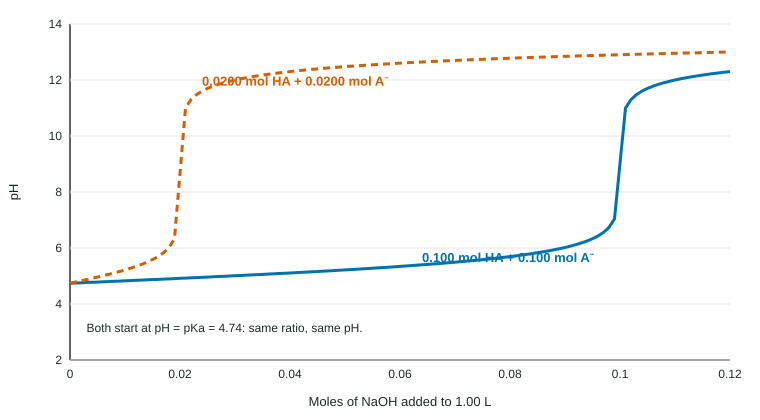

Two buffers can have exactly the same pH and still behave very differently when acid or base is added. One holds its pH through a large addition; the other gives way almost at once. The difference is buffer capacity: how much strong acid or strong base a buffer can absorb before its pH changes a lot.
Capacity is about moles
A buffer resists pH change by reacting with what is added: OH⁻ + HA → A⁻ + H₂O and H₃O⁺ + A⁻ → HA + H₂O. Each reaction is one for one, so a buffer can absorb, at most, as many moles of base as it has HA and as many moles of acid as it has A⁻. The pH, set by the ratio, says nothing about this; the capacity is set by the amounts.

The figure shows two buffers at pH 4.74. The dilute one runs out of HA after about 0.02 mol of base and its pH shoots up; the concentrated one holds out to about 0.10 mol.
Worked example 1: same pH, different capacity. Buffer A is 1.00 L with 0.500 mol each of CH₃COOH and CH₃COO⁻. Buffer B is 1.00 L with 0.0500 mol of each. Both have pH 4.74. Add 0.0400 mol HCl to each.
Buffer A. Acetate 0.500 − 0.040 = 0.460 mol; acid 0.540 mol. pH = 4.74 + log(0.460/0.540) = 4.67 (a drop of 0.07).
Buffer B. Acetate 0.0500 − 0.0400 = 0.0100 mol; acid 0.0900 mol. pH = 4.74 + log(0.0100/0.0900) = 3.79 (a drop of 0.95). Buffer B is close to exhausted.
Balanced capacity at pH = pKa
Capacity for added base depends on how much HA there is; capacity for added acid on how much A⁻. A buffer with equal amounts (pH = pKa) handles both directions equally. A buffer with a 9 : 1 ratio of HA to A⁻ can absorb a lot of base but very little acid.
That is why buffers are designed within about one unit of their pKa. At pH = pKa ± 1 the ratio is 10 : 1 or 1 : 10; further out, the minor component is a small fraction of the total, and a small addition uses it up. On a titration curve, this range is the flat buffer region on either side of the half-equivalence point.
When the buffer is overwhelmed
Once one component is gone, the Henderson-Hasselbalch equation no longer applies (it would need the log of zero). Find the excess strong acid or base and use it directly, as you did for strong acids and bases.
Worked example 2. A 1.00 L buffer has 0.100 mol CH₃COOH and 0.0200 mol CH₃COO⁻. What is the pH after 0.0300 mol HCl is added?
Step 1. H₃O⁺ + CH₃COO⁻ → CH₃COOH: all 0.0200 mol acetate reacts; 0.0300 − 0.0200 = 0.0100 mol H₃O⁺ is left over.
Step 2. The leftover strong acid sets the pH (the acetic acid adds very little beside it): [H₃O⁺] = 0.0100 M, pH = 2.00.
Step 3. Compare: before the addition the pH was 4.74 + log(0.0200/0.100) = 4.04. The buffer failed because it had too little conjugate base.
Choosing a buffer with good capacity
- Pick an acid with pKa within about 1 of the target pH (so the ratio is between 0.1 and 10).
- Use enough of both components for the additions you expect: the moles of A⁻ must exceed the acid that will be added, and the moles of HA the base.
- If the additions are mainly acid (as in blood), a ratio with more A⁻ than HA is reasonable.
Writing the explanation
"Buffer A has a greater capacity than Buffer B because it contains more moles of CH₃COO⁻ to react with added H₃O⁺, so after the same addition its ratio [CH₃COO⁻]/[CH₃COOH] changes less and its pH changes less." Note that an answer based on pH alone ("Buffer A has the better pH") cannot explain capacity.